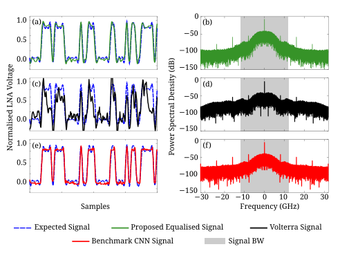

Nonlinearity Compensation

Nonlinearity equalisation using domain knowledge enhanced CNN equaliser.
Abstract
The terahertz communications band in the 252 to 325 GHz range has been recently explored for its potential to meet the stringent requirements for the emerging sixth generation of wireless communications. However, there are several challenges, including noise and nonlinearity, that hinder efficient implementations. This paper aims to address these limitations in terahertz communications through convolutional neural networks (CNN) enhanced by the domain knowledge from traditional Volterra filters. The proposed model achieves a 2.28 dB improvement in total harmonic distortion (THD) compared to the Volterra equalizing method and also shows a significant SNR improvement. In general, this work can significantly enhance the reliability and performance of terahertz communications systems, paving the way for the realization of advanced wireless applications.
Publications and further reading
This research has been published in a peer-reviewed journal, with a related conference publication also available.
Journal publication
Nonlinearity compensation for terahertz communications through neural networks ↗
Conference publication
Improving Signal Quality in Terahertz Communications with Neural Networks ↗